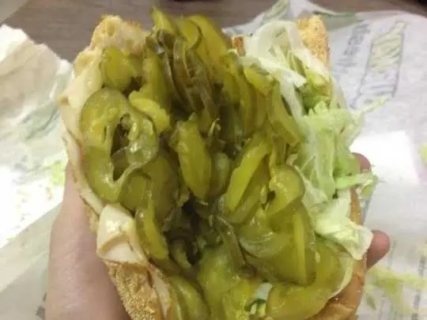

The 2AM Existential Crisis Sandwich

How chefs describe it ?
A deconstructed disaster: two sad egg blobs, accompanied by a soupy yellow puddle. It’s eggs... maybe. Probably. Scrambled? The jury's out. The only thing more scrambled is your mental state. This dish says, “I tried... and gave up halfway.” Serve with a fork and a resignation letter.
The ingredients you'll need :
- Bread (preferably not frozen)
- Peanut butter or Nutella (or both—who cares?)
- Pickles (trust the process)
- Chips for crunch
- Existential dread
The steps you should follow :
- Stare into the fridge at 2AM for 15 minutes. Sigh deeply.
- Grab bread. It’s probably fine. Smell it to be sure.
- Slather peanut butter/Nutella like you’re covering your feelings.
- Add pickles because your taste buds are asleep anyway.
- Sprinkle chips for that "why not" texture.
- Smush it all together like your hopes and dreams.
- Eat while staring blankly at the wall, questioning everything.
Warning: May cause unexpected enlightenment... or indigestion.
Good luck...
Back to Home